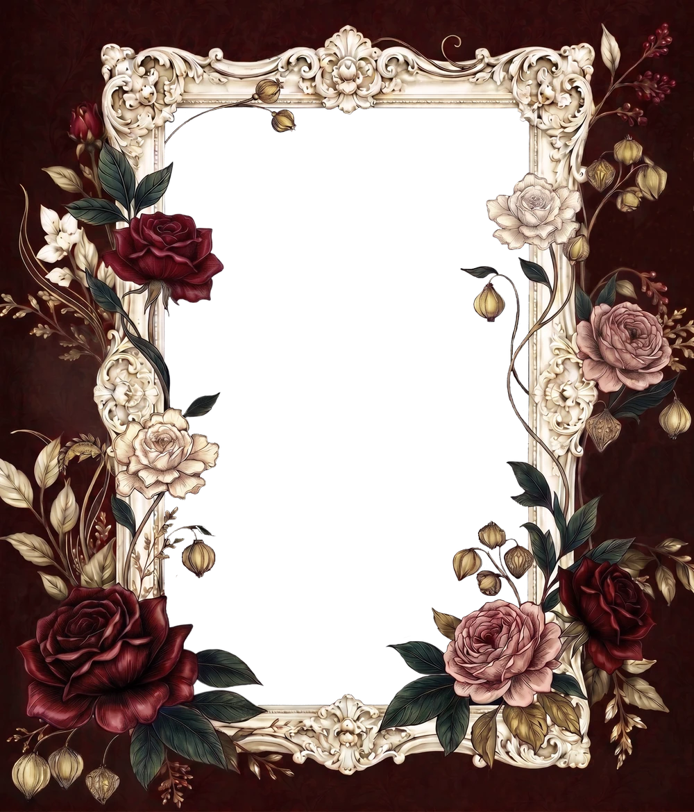
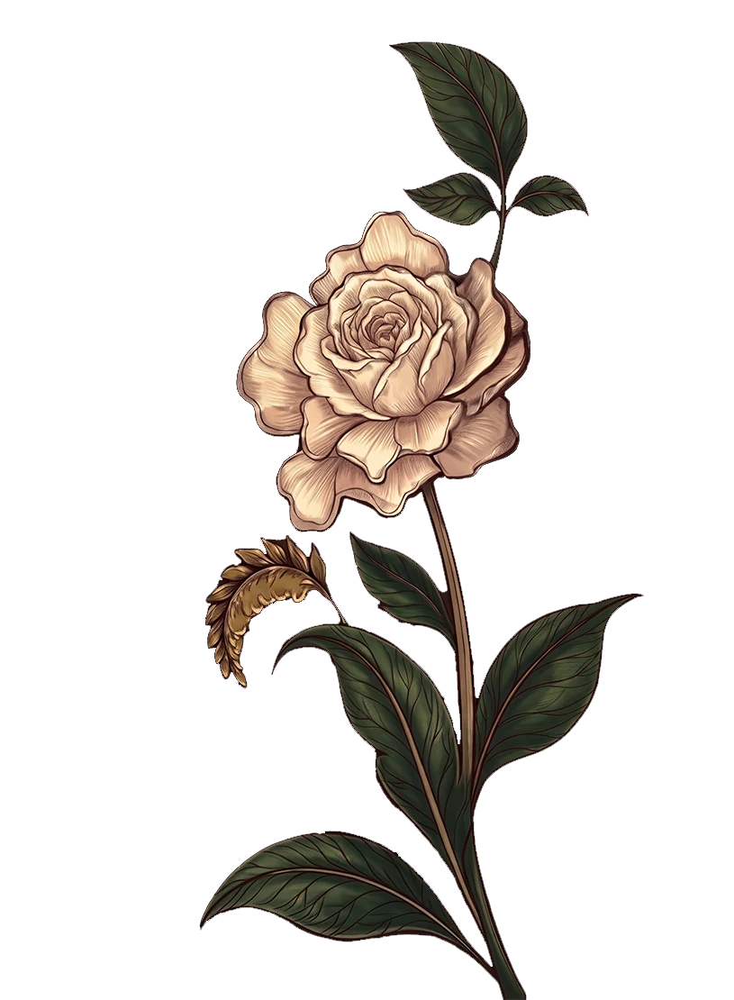
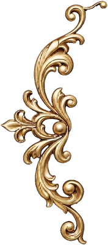
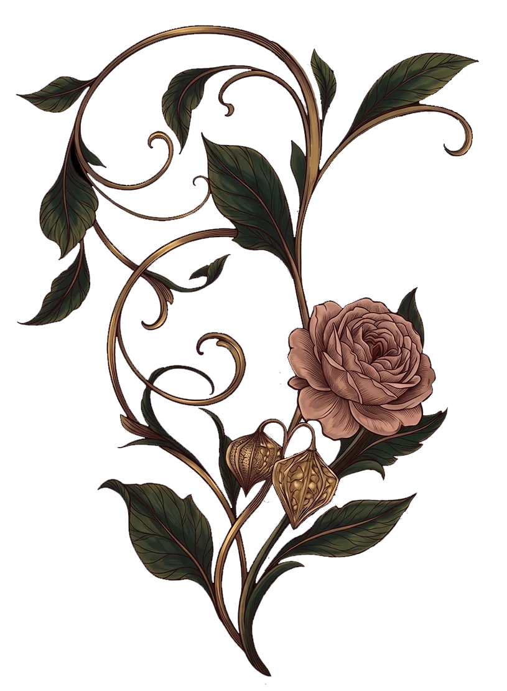

2026 We're Married！
JohnnyTeresa
Johnny
Teresa
陳彥勳
新郎 Groom&
陳怡瑄
新娘 Bride
Our Wedding Ceremony
12/20 星期日 中午 12:00
Sun. at 12:00 PM

20Dec.2026(農曆丙午年冬月十二)
賓客迎接
Guest Greeting
11 : 30
入席
Banquet
12 : 00
--
添加到日曆
- 11:30迎賓雞尾酒 & 滷味叭噗車
- 12:00入席
- 12:30婚宴開始
- 15:30期待下一次相見 <3

Wedding Location
台北君品酒店
Palais de Chine
103臺北市大同區建明里承德路一段3號
No. 3, Section 1, Chengde Road, Datong District, Taipei 103
➤ 路線導航
Dress Code
宴會服裝
Little Reminder
婚禮小叮嚀
🚇 交通建議
12/20 適逢「台北馬拉松」交管，且停車場與京站共用（無保留車位），假日容易客滿，強烈建議搭乘捷運前來最方便喔！
🅿️ 停車資訊
停車場入口位於市民大道（請認明「台北轉運站停車場」標誌），停放於 B4 或 B5 可搭酒店專屬電梯直達大廳。
🥂 迎賓酒會
11:30 備有精緻的中西式點心與迎賓雞尾酒，歡迎大家提早來吃吃喝喝、聊天拍照！
期待當天見到大家
一起享受美好的午宴時光！😊